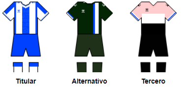

La secció de futbol femení del Reial Club Deportiu Espanyol de Barcelona fou creada l'any 1970. Juga a la Primera Divisió (antiga Superlliga), màxima categoria de la lliga espanyola de futbol femení. Al seu palmarès figuren una Superlliga, sis Copes de la Reina i cinc Copes de Catalunya.
